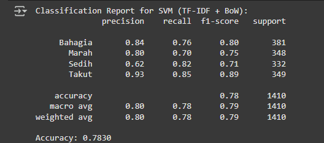

Projects.

Diabetes sense
Diabetes Sense is an application that detects ulcer wounds and directs users to the nearest hospital for treatment.
View on GitHubRythm
Rythm is a music-sharing application where users can upload their music for others to listen to, fostering a symbiotic relationship between creators and listeners.
View on GitHub
Super Vector Machine & Naive Bayes
This project trains machine learning models (SVM and NB) to detect emotions based on textual input.
View on GitHub
HeartLog
A simple diary app to track your daily emotions. Write entries, tag feelings, and get mood-based suggestions. View emotional stats, see local weather, and explore your journey.
View on GitHub